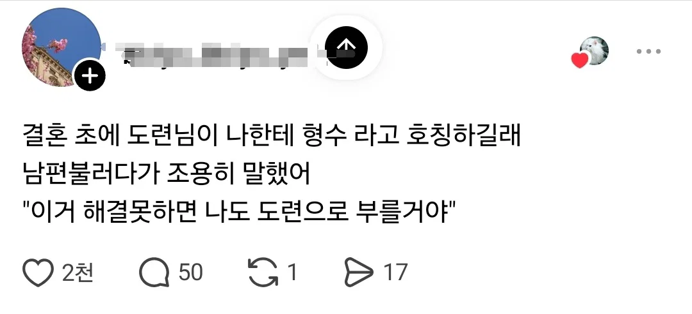

어이 도령

어이 도령
호칭 따지는건 격식 차리는거지 안하고 싶음 별수 없지
저게 어른들이 볼때 무례한거로 보여서 호칭을 좀 붙기긴해
형수님이 나보다 어려서 도련님이라고 불러줘서 편함....
못배워처먹은 쌍놈집안이면 어쩔수 없지
상관없지 남의 엄마도 요새 어머님이라고하는데
제1도련선 말하는거보니 중국인이군
그렇게 신들리게 되고
Bleed 2mm씩 ㄱㄱ
절에 계신 스
나도 조금씩 다르게 부르긴 하는데 ㅋㅋㅋ
당사자 반발이 아니라도 부모 선에서 타이를 문제라고 생각함
ㅇㅇ.. 우리 집사람이랑 동생이랑 8살 차이나서 도련님 이라고는 못하고 그냥 도령이라고 부름.ㅋㅋ
근본없이 자라면 저럴수있음
근데 갑자기 궁금한데 형부는 형부님이라고 안하는데
아무래도 호칭 자체가 옛날 말이라 그런 잔재가 남아있는건가
본래는 모든 호칭 자체가 일종의 경칭/멸칭 사용이 내포되어 있었음. '선생'은 그 자체로 경어고 '백정'은 그 자체로 멸칭인데, 사회적 맥락에서의 반어적 경칭(경멸)과 반어적 멸칭(친애) 따위가 섞이면서 그 안에 있었던 경칭과 멸칭은 님과 놈으로 빠져나온거지. 선생이 경칭이고 뭐고 간에 현대어에서 '선생님'은 경칭이지만 '선생, 선생놈'은 시비나 거는 무언가가 되어버린 거 아닐까.
애있으면 도련님 아니고 그냥 고모 삼촌 그렇게 부름
우리나라도 걍 미쿡처럼 냅다 이름 부르면 좋겠어
겁나 헷갈려
야 도련!
남도령~ 이러는건 귀여운데
어이 스
같은 항렬이면 님자 뺀 그냥 형수라고 칭하는 게 맞는 아님? 난 그렇게 배웠는데
애초에 같은 항렬 말고 더 아래 항렬이 형수님이라고 부를일이 있음? 동생의 아들이 내 아내를 부를때 형수님이라고 부르면 이상하지 않음? 아래 항렬이 부를땐 큰엄마지
가족친척아닌 형의 아내는 형수님이라고 불러도 상관없지
그건 호형호제 할정도의 가까운 사이면.
친하면 형수라고 불러도 되지
안친한데 누구 이름부를때 xx님하다가 친해지면 xx야 라고 하는것처럼
물론 듣는 상대를 고려해서
보통 형수~라고부르면 부모님이나 형이 싸가지존나없다고 머라하지
그게 근본없는 집임
형수는 낮춤말이 아니다
그런거 따질거면 저 도령 결혼하면 서방님이라고 제대로 호칭해야 되는데
서방이라고 제대로 부를거임?
백중백 그렇게 안할걸?
따질거면 제대로 다 하고, 내로남불할거면 따지는게 븅신임
글쿤... 우리집에선 손위면 다 님자붙이는데 막그런건아닌갑네
형수님은 높임말이고 붙이는게 좋대ㅋㅋ
형을 형님 이라고 부르지 않을 정도면 형수도 맞는표현이라 생각햇는데
직접 부를때는 형수님이라고 하는게 맞다네? ㅎ
여자가 나이가 더 어린가? 그럼 그럴 수 있긴 하지 근데 나이가 안 어리면 뚝배기 깨버려야 하는거고ㅋㅋㅋ
셋째는 제2도련인가
그냥 애지간히 친해지기 전엔 보편적으로 예의인 호칭 쓰는게 맞지 뭘
여자들은 왜 항상 누가 해결해주길 바라냐
저 상황은 애매하긴하지 사람 관계가 애매하게 가까워진거라고해야하나 결혼 전부터 서로의 가족까지 친해질 일은 별로 없으니까
저건 여자라서가 아니라 오히려 사회적지능이 높은거 같은데
직접 전달함 -> 기분 나쁜걸 어필하게 됨으로 좋게 말해도 사이가 서먹해질 수 있음
남편을 통해 요청함 -> 남편이 넌 아무리 형수가 편해도 형수님 붙혀야지 형수가 뭐냐 -> 직접적기분이 나쁘다는걸 듣지 않았으므로 둘 사이가 틀어질 위험을 상대적으로 적어짐
형님이라 안하고 형이라 하는데
형수가 맞다고?
형수 리싸수
어딜 꺄불구이슴
친하면 형수 해도 되고 안친하면 형수님해야지 서먹서먹한테 형수? 하는건 알로 보겠단거지
그건 찐따식 피해망상인듯
형수라는 말자체가 경어이지 낮춤말이 아님
김형수 잘살고 있으려나
도련! 형 죽었다구요!
도령....내 갓으로 냉삼 구워먹지 말게...
형수가 부릅니다 왼쪽가슴
도련이 아니고 도령이고 예법상 도련님
피해망상에 찌들어서 헛소리
형부가 전통적인 호칭이고 형수도 쓰지만 원래 용법은 형수님이 아니라 형수가 맞음
따질거면 예법에 맞춰서 다 따지던가
예법 안따지면서 예를 논하는거면 그게 내로남불 지멋대로 개판 개족보지
님안붙여서 지랄발광하는게 얼마나 무식한짓인지
장인어른 하면 개호로자식이고 장인님 장인어른님해야 예의차린거냐? 븅신같은 개소리를 들어주니깐 헛소리를 맞는말인줄 알고 지껄임
근데 요새도 저런 호칭 씀??
나는 남편동생 그냥 이름 부르는데.
오히려 요즘 내주변은, 가족보다는 지인의 남편/와이프를 마땅히 부를 말이 없어서 저런호칭을 쓰는듯